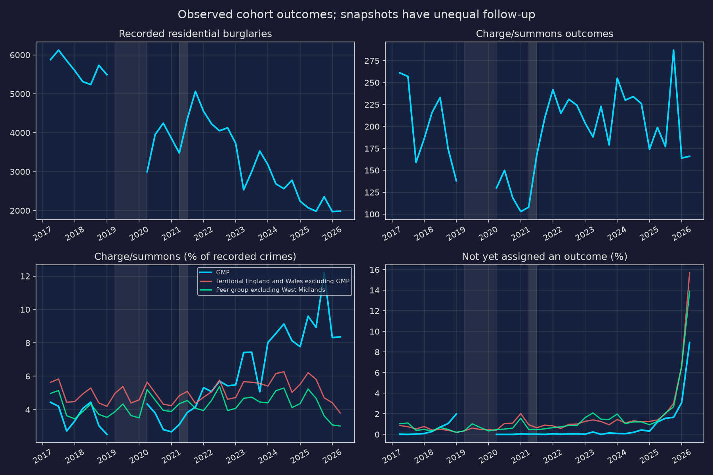
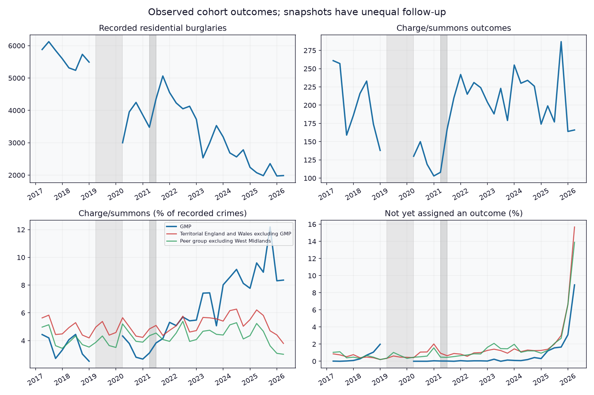
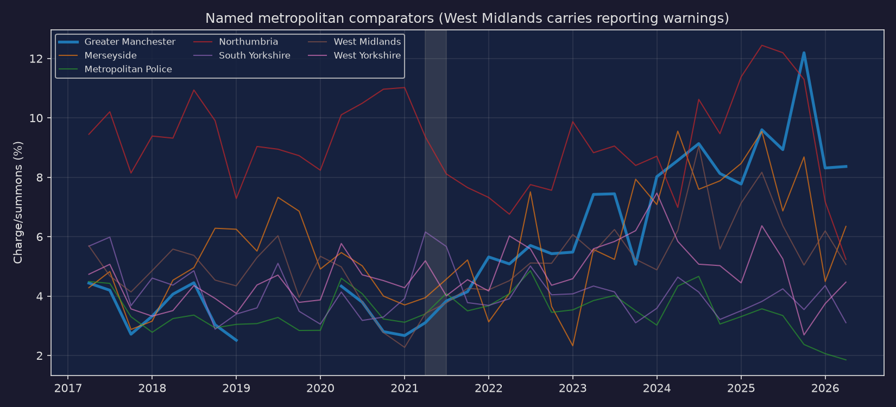
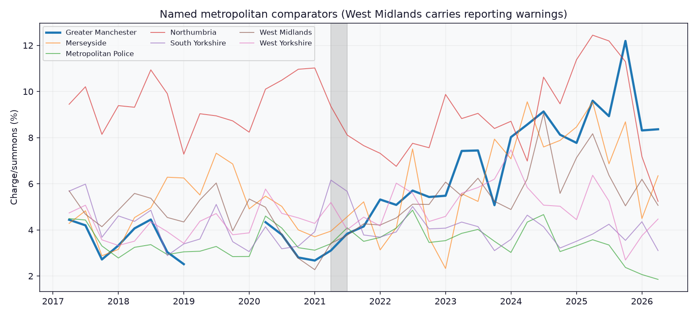
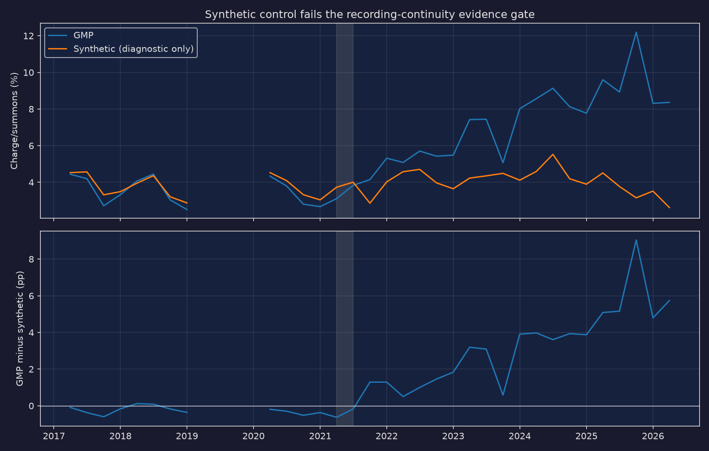
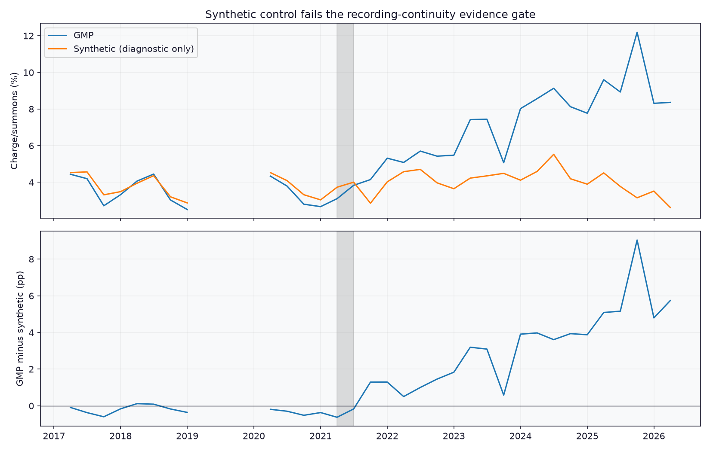
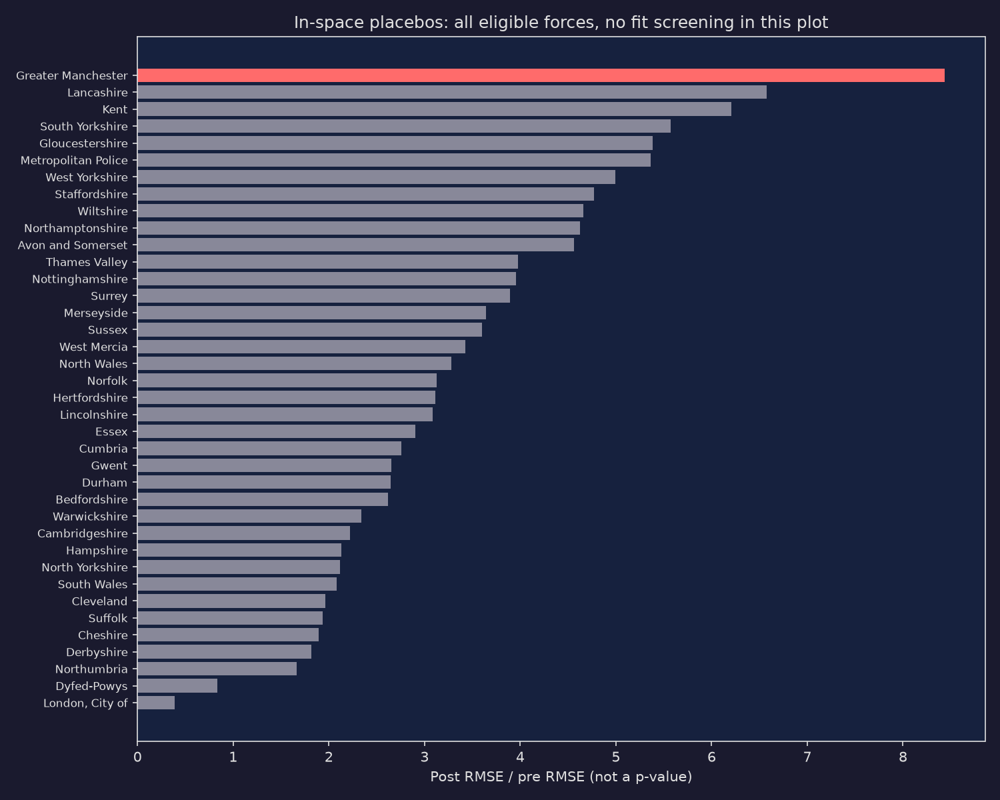
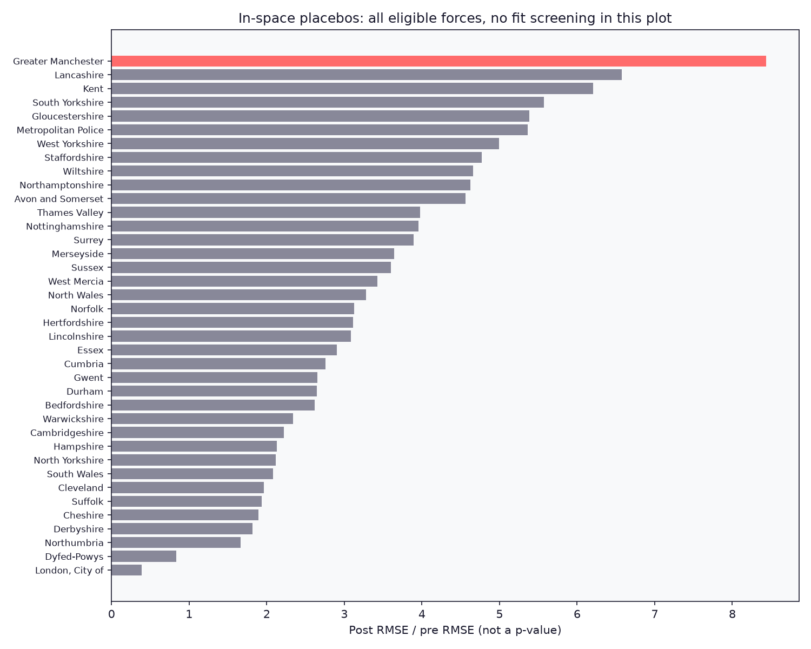

For crimes recorded in 2020/21, GMP’s charge/summons rate is 3.33% (502 of 15,056). In 2024/25 it is 8.42% (864 of 10,267), a change of +5.08 percentage points. Both are the outcomes known at their respective workbook snapshots, not measurements at equal follow-up ages.
What this analysis can tell us
This is a descriptive comparison, not evidence that Stephen Watson or burglary attendance caused a change. The official data contain a major GMP recording break before his appointment. A synthetic control can be calculated, but it cannot repair that break or supply a credible causal estimate.
The question follows my earlier post on burglary attendance: how did recorded residential burglary outcomes change around Watson taking office on 24 May 2021? April–June 2021 is a transition quarter; July–September 2021 is the first full quarter afterwards. These dates are the research brief’s intervention definition. National attendance requirements, other reforms, pandemic disruption and changes in crime recording prevent a clean attribution to one person or policy.
I use the Home Office’s offence-cohort outcomes, through April–June 2026. These files cannot replicate an August 2026 claim. The latest workbook is dated 22 October 2026, but its crimes stop in June. A publication date is not an offence date.
What is counted
The numerator is outcome 1, Charged/Summonsed. The denominator is the sum across all outcome types, including code 0, Not yet assigned an outcome, for the selected offences recorded in that quarter. This is a count of recorded crimes, not victims, suspects, convictions or investigations closed that quarter. A charge is not a conviction. Code 0 is not synonymous with every unsolved crime: a closed case without a suspect has a different outcome code.
The other numeric column in the files counts investigations closed in the quarter. Dividing that flow by new crimes in the same quarter mixes different cohorts. It is retained in the extraction for audit but never used in these rates. “Detection rate” below means the specified cohort charge/summons percentage, not an unspecified solved measure.
Residential burglary includes attempts, distraction burglary and aggravated burglary. From April 2017 to March 2023 I use codes 28E–28H and 29A. From April 2023 I use 28I–28P, 29B and 29C, adding homes and unconnected buildings together. The latest workbook notes describe the split. Earlier domestic burglary is retained in the downloadable audit using 28A–28D and 29, but excluded from model fitting because the April 2017 classification widened the residential boundary. Old residential codes still contain 2,673 crimes in 2023/24 nationally. I include those residual 28E–28H/29A counts alongside the new codes after April 2023, because they remain residential crimes in these offence cohorts. The residual counts are audited separately; old domestic codes are not carried into the residential definition.
A secondary “broader disposal” measure sums codes 1, 2, 3, 4, 6, 7 and 8: charges, youth/adult cautions, taken into consideration, penalty notices, cannabis/khat warnings and community resolutions. It excludes offender death, non-prosecution decisions, diversion code 22 and deferred prosecution codes 23–24. This fixed definition is a sensitivity check, not a reconstruction of GMP’s solved statistic. The notes record changes in disposal practice and new deferred prosecution codes in April 2026.
Definitions and caveats are transcribed from the cached workbooks’ headers, outcome labels and Notes sheets. See the official data collection and official user guide. The user guide and data collection page were independently consulted alongside the workbook notes.
Counts, rates and real comparators
I chose the other metropolitan territorial forces as real comparators on institutional/geographic grounds, without selecting on their post-2021 performance: Merseyside, Metropolitan Police, Northumbria, South Yorkshire, West Midlands and West Yorkshire. These are contextual comparisons, not matched or randomly assigned controls. West Midlands has explicit reporting warnings, so the headline peer line excludes it; the full group and individual force results remain visible.
The national benchmark is all 42 other territorial England and Wales forces, subject to available valid cells each quarter, excluding GMP and British Transport Police. It is a burglary-count-weighted rate: total charges divided by total recorded residential burglaries, not the average force percentage. It is not an all-crime national charge rate, nor necessarily an exact reproduction of a published national headline. Workbook warnings still apply to the inclusive national benchmark. The tables expose the number of contributing forces; a separate quality-screened benchmark is supplied with the derived data.
The latest quarters have less time for outcomes to be assigned. The main model summary ends at March 2025 to reduce that problem, but this does not establish equal maturity. The descriptive table also shows 2025/26 and the newest quarter, with unresolved counts and proportions.
| period | force | denominator | charge | unresolved | rate | unresolved_rate | |
|---|---|---|---|---|---|---|---|
| 0 | Before: 2020/21 | Greater Manchester | 15056.0 | 502.0 | 2.0 | 3.334 | 0.013 |
| 5 | Before: 2020/21 | Peer group excluding West Midlands | 71187.0 | 3109.0 | 555.0 | 4.367 | 0.780 |
| 7 | Before: 2020/21 | Territorial England and Wales excluding GMP | 180940.0 | 8654.0 | 2078.0 | 4.783 | 1.148 |
| 10 | First full year | Greater Manchester | 18201.0 | 834.0 | 5.0 | 4.582 | 0.027 |
| 15 | First full year | Peer group excluding West Midlands | 67536.0 | 2880.0 | 402.0 | 4.264 | 0.595 |
| 17 | First full year | Territorial England and Wales excluding GMP | 177178.0 | 8508.0 | 1324.0 | 4.802 | 0.747 |
| 20 | 2024/25 | Greater Manchester | 10267.0 | 864.0 | 26.0 | 8.415 | 0.253 |
| 25 | 2024/25 | Peer group excluding West Midlands | 59952.0 | 2819.0 | 665.0 | 4.702 | 1.109 |
| 27 | 2024/25 | Territorial England and Wales excluding GMP | 156016.0 | 8951.0 | 1926.0 | 5.737 | 1.234 |
| 30 | 2025/26 | Greater Manchester | 8382.0 | 827.0 | 156.0 | 9.866 | 1.861 |
| 35 | 2025/26 | Peer group excluding West Midlands | 56452.0 | 2321.0 | 1815.0 | 4.111 | 3.215 |
| 37 | 2025/26 | Territorial England and Wales excluding GMP | 145461.0 | 7646.0 | 4809.0 | 5.256 | 3.306 |
| 40 | Latest quarter | Greater Manchester | 1985.0 | 166.0 | 177.0 | 8.363 | 8.917 |
| 45 | Latest quarter | Peer group excluding West Midlands | 12998.0 | 392.0 | 1806.0 | 3.016 | 13.894 |
| 47 | Latest quarter | Territorial England and Wales excluding GMP | 33709.0 | 1280.0 | 5286.0 | 3.797 | 15.681 |




| period | force | denominator | charge | unresolved | rate | unresolved_rate | |
|---|---|---|---|---|---|---|---|
| 1 | Before: 2020/21 | Merseyside | 5780.0 | 259.0 | 5.0 | 4.481 | 0.087 |
| 2 | Before: 2020/21 | Metropolitan Police | 42816.0 | 1592.0 | 246.0 | 3.718 | 0.575 |
| 4 | Before: 2020/21 | Northumbria | 4492.0 | 478.0 | 203.0 | 10.641 | 4.519 |
| 6 | Before: 2020/21 | South Yorkshire | 7467.0 | 269.0 | 4.0 | 3.603 | 0.054 |
| 8 | Before: 2020/21 | West Midlands | 13931.0 | 468.0 | 978.0 | 3.359 | 7.020 |
| 9 | Before: 2020/21 | West Yorkshire | 10632.0 | 511.0 | 97.0 | 4.806 | 0.912 |
| 11 | First full year | Merseyside | 5011.0 | 215.0 | 14.0 | 4.291 | 0.279 |
| 12 | First full year | Metropolitan Police | 39930.0 | 1525.0 | 130.0 | 3.819 | 0.326 |
| 14 | First full year | Northumbria | 4508.0 | 336.0 | 23.0 | 7.453 | 0.510 |
| 16 | First full year | South Yorkshire | 8448.0 | 352.0 | 0.0 | 4.167 | 0.000 |
| 18 | First full year | West Midlands | 15552.0 | 652.0 | 115.0 | 4.192 | 0.739 |
| 19 | First full year | West Yorkshire | 9639.0 | 452.0 | 235.0 | 4.689 | 2.438 |
| 21 | 2024/25 | Merseyside | 2776.0 | 232.0 | 20.0 | 8.357 | 0.720 |
| 22 | 2024/25 | Metropolitan Police | 34302.0 | 1302.0 | 258.0 | 3.796 | 0.752 |
| 24 | 2024/25 | Northumbria | 4907.0 | 464.0 | 46.0 | 9.456 | 0.937 |
| 26 | 2024/25 | South Yorkshire | 7449.0 | 285.0 | 7.0 | 3.826 | 0.094 |
| 28 | 2024/25 | West Midlands | 11236.0 | 780.0 | 3.0 | 6.942 | 0.027 |
| 29 | 2024/25 | West Yorkshire | 10518.0 | 536.0 | 334.0 | 5.096 | 3.176 |
| 31 | 2025/26 | Merseyside | 2779.0 | 210.0 | 73.0 | 7.557 | 2.627 |
| 32 | 2025/26 | Metropolitan Police | 32718.0 | 912.0 | 1254.0 | 2.787 | 3.833 |
| 34 | 2025/26 | Northumbria | 4546.0 | 491.0 | 133.0 | 10.801 | 2.926 |
| 36 | 2025/26 | South Yorkshire | 5910.0 | 235.0 | 57.0 | 3.976 | 0.964 |
| 38 | 2025/26 | West Midlands | 10332.0 | 661.0 | 106.0 | 6.398 | 1.026 |
| 39 | 2025/26 | West Yorkshire | 10499.0 | 473.0 | 298.0 | 4.505 | 2.838 |
| 41 | Latest quarter | Merseyside | 583.0 | 37.0 | 111.0 | 6.346 | 19.039 |
| 42 | Latest quarter | Metropolitan Police | 7393.0 | 137.0 | 1011.0 | 1.853 | 13.675 |
| 44 | Latest quarter | Northumbria | 1451.0 | 76.0 | 247.0 | 5.238 | 17.023 |
| 46 | Latest quarter | South Yorkshire | 1289.0 | 40.0 | 113.0 | 3.103 | 8.766 |
| 48 | Latest quarter | West Midlands | 2252.0 | 114.0 | 231.0 | 5.062 | 10.258 |
| 49 | Latest quarter | West Yorkshire | 2282.0 | 102.0 | 324.0 | 4.470 | 14.198 |
| quarter | force | n_forces | expected_forces | |
|---|---|---|---|---|
| 12 | 2017Q2 | Territorial England and Wales excluding GMP | 42 | 42 |
| 13 | 2017Q3 | Territorial England and Wales excluding GMP | 42 | 42 |
| 14 | 2017Q4 | Territorial England and Wales excluding GMP | 42 | 42 |
| 15 | 2018Q1 | Territorial England and Wales excluding GMP | 42 | 42 |
| 16 | 2018Q2 | Territorial England and Wales excluding GMP | 42 | 42 |
| 17 | 2018Q3 | Territorial England and Wales excluding GMP | 42 | 42 |
| 18 | 2018Q4 | Territorial England and Wales excluding GMP | 42 | 42 |
| 19 | 2019Q1 | Territorial England and Wales excluding GMP | 42 | 42 |
| 20 | 2019Q2 | Territorial England and Wales excluding GMP | 42 | 42 |
| 21 | 2019Q3 | Territorial England and Wales excluding GMP | 42 | 42 |
| 22 | 2019Q4 | Territorial England and Wales excluding GMP | 42 | 42 |
| 23 | 2020Q1 | Territorial England and Wales excluding GMP | 42 | 42 |
| 24 | 2020Q2 | Territorial England and Wales excluding GMP | 42 | 42 |
| 25 | 2020Q3 | Territorial England and Wales excluding GMP | 42 | 42 |
| 26 | 2020Q4 | Territorial England and Wales excluding GMP | 42 | 42 |
| 27 | 2021Q1 | Territorial England and Wales excluding GMP | 42 | 42 |
| 28 | 2021Q2 | Territorial England and Wales excluding GMP | 42 | 42 |
| 29 | 2021Q3 | Territorial England and Wales excluding GMP | 42 | 42 |
| 30 | 2021Q4 | Territorial England and Wales excluding GMP | 42 | 42 |
| 31 | 2022Q1 | Territorial England and Wales excluding GMP | 41 | 42 |
| 32 | 2022Q2 | Territorial England and Wales excluding GMP | 42 | 42 |
| 33 | 2022Q3 | Territorial England and Wales excluding GMP | 42 | 42 |
| 34 | 2022Q4 | Territorial England and Wales excluding GMP | 42 | 42 |
| 35 | 2023Q1 | Territorial England and Wales excluding GMP | 42 | 42 |
| 36 | 2023Q2 | Territorial England and Wales excluding GMP | 42 | 42 |
| 37 | 2023Q3 | Territorial England and Wales excluding GMP | 42 | 42 |
| 38 | 2023Q4 | Territorial England and Wales excluding GMP | 42 | 42 |
| 39 | 2024Q1 | Territorial England and Wales excluding GMP | 42 | 42 |
| 40 | 2024Q2 | Territorial England and Wales excluding GMP | 42 | 42 |
| 41 | 2024Q3 | Territorial England and Wales excluding GMP | 42 | 42 |
| 42 | 2024Q4 | Territorial England and Wales excluding GMP | 42 | 42 |
| 43 | 2025Q1 | Territorial England and Wales excluding GMP | 42 | 42 |
| 44 | 2025Q2 | Territorial England and Wales excluding GMP | 42 | 42 |
| 45 | 2025Q3 | Territorial England and Wales excluding GMP | 42 | 42 |
| 46 | 2025Q4 | Territorial England and Wales excluding GMP | 42 | 42 |
| 47 | 2026Q1 | Territorial England and Wales excluding GMP | 42 | 42 |
| 48 | 2026Q2 | Territorial England and Wales excluding GMP | 42 | 42 |
| 61 | 2017Q2 | Metropolitan peer group | 6 | 6 |
| 62 | 2017Q3 | Metropolitan peer group | 6 | 6 |
| 63 | 2017Q4 | Metropolitan peer group | 6 | 6 |
| 64 | 2018Q1 | Metropolitan peer group | 6 | 6 |
| 65 | 2018Q2 | Metropolitan peer group | 6 | 6 |
| 66 | 2018Q3 | Metropolitan peer group | 6 | 6 |
| 67 | 2018Q4 | Metropolitan peer group | 6 | 6 |
| 68 | 2019Q1 | Metropolitan peer group | 6 | 6 |
| 69 | 2019Q2 | Metropolitan peer group | 6 | 6 |
| 70 | 2019Q3 | Metropolitan peer group | 6 | 6 |
| 71 | 2019Q4 | Metropolitan peer group | 6 | 6 |
| 72 | 2020Q1 | Metropolitan peer group | 6 | 6 |
| 73 | 2020Q2 | Metropolitan peer group | 6 | 6 |
| 74 | 2020Q3 | Metropolitan peer group | 6 | 6 |
| 75 | 2020Q4 | Metropolitan peer group | 6 | 6 |
| 76 | 2021Q1 | Metropolitan peer group | 6 | 6 |
| 77 | 2021Q2 | Metropolitan peer group | 6 | 6 |
| 78 | 2021Q3 | Metropolitan peer group | 6 | 6 |
| 79 | 2021Q4 | Metropolitan peer group | 6 | 6 |
| 80 | 2022Q1 | Metropolitan peer group | 6 | 6 |
| 81 | 2022Q2 | Metropolitan peer group | 6 | 6 |
| 82 | 2022Q3 | Metropolitan peer group | 6 | 6 |
| 83 | 2022Q4 | Metropolitan peer group | 6 | 6 |
| 84 | 2023Q1 | Metropolitan peer group | 6 | 6 |
| 85 | 2023Q2 | Metropolitan peer group | 6 | 6 |
| 86 | 2023Q3 | Metropolitan peer group | 6 | 6 |
| 87 | 2023Q4 | Metropolitan peer group | 6 | 6 |
| 88 | 2024Q1 | Metropolitan peer group | 6 | 6 |
| 89 | 2024Q2 | Metropolitan peer group | 6 | 6 |
| 90 | 2024Q3 | Metropolitan peer group | 6 | 6 |
| 91 | 2024Q4 | Metropolitan peer group | 6 | 6 |
| 92 | 2025Q1 | Metropolitan peer group | 6 | 6 |
| 93 | 2025Q2 | Metropolitan peer group | 6 | 6 |
| 94 | 2025Q3 | Metropolitan peer group | 6 | 6 |
| 95 | 2025Q4 | Metropolitan peer group | 6 | 6 |
| 96 | 2026Q1 | Metropolitan peer group | 6 | 6 |
| 97 | 2026Q2 | Metropolitan peer group | 6 | 6 |
| 110 | 2017Q2 | Peer group excluding West Midlands | 5 | 5 |
| 111 | 2017Q3 | Peer group excluding West Midlands | 5 | 5 |
| 112 | 2017Q4 | Peer group excluding West Midlands | 5 | 5 |
| 113 | 2018Q1 | Peer group excluding West Midlands | 5 | 5 |
| 114 | 2018Q2 | Peer group excluding West Midlands | 5 | 5 |
| 115 | 2018Q3 | Peer group excluding West Midlands | 5 | 5 |
| 116 | 2018Q4 | Peer group excluding West Midlands | 5 | 5 |
| 117 | 2019Q1 | Peer group excluding West Midlands | 5 | 5 |
| 118 | 2019Q2 | Peer group excluding West Midlands | 5 | 5 |
| 119 | 2019Q3 | Peer group excluding West Midlands | 5 | 5 |
| 120 | 2019Q4 | Peer group excluding West Midlands | 5 | 5 |
| 121 | 2020Q1 | Peer group excluding West Midlands | 5 | 5 |
| 122 | 2020Q2 | Peer group excluding West Midlands | 5 | 5 |
| 123 | 2020Q3 | Peer group excluding West Midlands | 5 | 5 |
| 124 | 2020Q4 | Peer group excluding West Midlands | 5 | 5 |
| 125 | 2021Q1 | Peer group excluding West Midlands | 5 | 5 |
| 126 | 2021Q2 | Peer group excluding West Midlands | 5 | 5 |
| 127 | 2021Q3 | Peer group excluding West Midlands | 5 | 5 |
| 128 | 2021Q4 | Peer group excluding West Midlands | 5 | 5 |
| 129 | 2022Q1 | Peer group excluding West Midlands | 5 | 5 |
| 130 | 2022Q2 | Peer group excluding West Midlands | 5 | 5 |
| 131 | 2022Q3 | Peer group excluding West Midlands | 5 | 5 |
| 132 | 2022Q4 | Peer group excluding West Midlands | 5 | 5 |
| 133 | 2023Q1 | Peer group excluding West Midlands | 5 | 5 |
| 134 | 2023Q2 | Peer group excluding West Midlands | 5 | 5 |
| 135 | 2023Q3 | Peer group excluding West Midlands | 5 | 5 |
| 136 | 2023Q4 | Peer group excluding West Midlands | 5 | 5 |
| 137 | 2024Q1 | Peer group excluding West Midlands | 5 | 5 |
| 138 | 2024Q2 | Peer group excluding West Midlands | 5 | 5 |
| 139 | 2024Q3 | Peer group excluding West Midlands | 5 | 5 |
| 140 | 2024Q4 | Peer group excluding West Midlands | 5 | 5 |
| 141 | 2025Q1 | Peer group excluding West Midlands | 5 | 5 |
| 142 | 2025Q2 | Peer group excluding West Midlands | 5 | 5 |
| 143 | 2025Q3 | Peer group excluding West Midlands | 5 | 5 |
| 144 | 2025Q4 | Peer group excluding West Midlands | 5 | 5 |
| 145 | 2026Q1 | Peer group excluding West Midlands | 5 | 5 |
| 146 | 2026Q2 | Peer group excluding West Midlands | 5 | 5 |
The recording break is central
The 2019/20 Notes sheet says GMP could not supply July 2019–March 2020 data following a new IT system in July 2019, and separately says its cohort outcomes are not up to date or comparable. This is the iOPS-era break identified in the brief. I exclude all of 2019/20, including April–June 2019, from fitting and mark it as a gap in figures. The actual extracted cells remain below. Some source outcome-0 cells are negative, including South Yorkshire in 2017/18 and Dyfed-Powys in 2023/24. I preserve these signed source values in the summed denominator; they cannot literally be counts of open investigations. Their cause cannot be established from the cached notes. The negative-cell audit is retained, rates with non-positive denominators are unavailable, and a sensitivity specification makes every negative-cell force-quarter unavailable (excluding affected pre-period donors). No missing values are imputed as zeros and no line is interpolated across the missing model data.
After that exclusion, the comparable residential definition provides eight pre-break quarters (April 2017–March 2019) and just four quarters after the break and before the appointment (April 2020–March 2021). Those four also coincide with the pandemic. Numerical availability after the break does not certify consistent crime recording. Changes in what gets recorded can change both counts and rates even if investigative performance is unchanged.
| quarter | denominator | charge | unresolved | rate | missing_cells | recording_warning | |
|---|---|---|---|---|---|---|---|
| 718 | 2018Q2 | 5314.0 | 216.0 | 15.0 | 4.064735 | 0 | False |
| 762 | 2018Q3 | 5238.0 | 233.0 | 37.0 | 4.448263 | 0 | False |
| 806 | 2018Q4 | 5732.0 | 174.0 | 61.0 | 3.035590 | 0 | False |
| 850 | 2019Q1 | 5491.0 | 138.0 | 109.0 | 2.513203 | 0 | False |
| 894 | 2019Q2 | 4575.0 | 81.0 | 663.0 | 1.770492 | 0 | True |
| 938 | 2019Q3 | NaN | NaN | NaN | NaN | 110 | True |
| 982 | 2019Q4 | NaN | NaN | NaN | NaN | 110 | True |
| 1026 | 2020Q1 | NaN | NaN | NaN | NaN | 110 | True |
| 1070 | 2020Q2 | 2999.0 | 130.0 | 0.0 | 4.334778 | 0 | False |
| 1114 | 2020Q3 | 3954.0 | 150.0 | 0.0 | 3.793627 | 0 | False |
| 1158 | 2020Q4 | 4246.0 | 119.0 | 0.0 | 2.802638 | 0 | False |
| 1202 | 2021Q1 | 3857.0 | 103.0 | 2.0 | 2.670469 | 0 | False |
| 1246 | 2021Q2 | 3478.0 | 108.0 | 1.0 | 3.105233 | 0 | False |
| financial_year | code | numeric_total | missing_cells | |
|---|---|---|---|---|
| 0 | 2023/24 | 28E | 2008.0 | 0 |
| 1 | 2023/24 | 28F | 507.0 | 0 |
| 2 | 2023/24 | 28G | 29.0 | 0 |
| 3 | 2023/24 | 28H | 2.0 | 0 |
| 4 | 2023/24 | 29A | 127.0 | 0 |
| 5 | 2024/25 | 28E | 3.0 | 0 |
| 6 | 2024/25 | 29A | 11.0 | 0 |
| 7 | 2025/26 | 28F | 1.0 | 0 |
| 8 | 2026/27 | 28E | 1.0 | 0 |
| negative_cells | signed_total | ||
|---|---|---|---|
| financial_year | force | ||
| 2014/15 | Avon and Somerset | 1 | -1.0 |
| Bedfordshire | 3 | -8.0 | |
| Cambridgeshire | 7 | -16.0 | |
| Cleveland | 4 | -20.0 | |
| Devon and Cornwall | 2 | -2.0 | |
| Dorset | 8 | -10.0 | |
| Durham | 5 | -15.0 | |
| Essex | 9 | -41.0 | |
| Gloucestershire | 7 | -8.0 | |
| Gwent | 3 | -5.0 | |
| Hampshire | 5 | -19.0 | |
| Hertfordshire | 7 | -374.0 | |
| Humberside | 3 | -4.0 | |
| Kent | 1 | -1.0 | |
| London, City of | 3 | -3.0 | |
| Merseyside | 4 | -11.0 | |
| Metropolitan Police | 3 | -158.0 | |
| Norfolk | 3 | -3.0 | |
| North Yorkshire | 7 | -12.0 | |
| Northamptonshire | 3 | -6.0 | |
| Northumbria | 3 | -11.0 | |
| Nottinghamshire | 4 | -20.0 | |
| South Wales | 5 | -65.0 | |
| South Yorkshire | 7 | -66.0 | |
| Staffordshire | 1 | -1.0 | |
| Suffolk | 4 | -13.0 | |
| Surrey | 7 | -24.0 | |
| Warwickshire | 3 | -8.0 | |
| West Mercia | 8 | -17.0 | |
| West Midlands | 4 | -5.0 | |
| West Yorkshire | 2 | -2.0 | |
| Wiltshire | 5 | -9.0 | |
| 2015/16 | Derbyshire | 1 | -1.0 |
| Humberside | 5 | -18.0 | |
| Leicestershire | 3 | -16.0 | |
| London, City of | 1 | -1.0 | |
| South Yorkshire | 4 | -7.0 | |
| 2016/17 | Essex | 1 | -6.0 |
| Humberside | 3 | -5.0 | |
| South Yorkshire | 1 | -3.0 | |
| Wiltshire | 2 | -6.0 | |
| 2017/18 | South Yorkshire | 4 | -6.0 |
| 2023/24 | Dyfed-Powys | 4 | -26.0 |
| Humberside | 2 | -4.0 | |
| 2024/25 | Humberside | 4 | -12.0 |
| 2025/26 | Humberside | 4 | -14.0 |
| 2026/27 | Humberside | 1 | -4.0 |
A synthetic control, with a failed evidence gate
A synthetic control is a weighted mixture of other forces. Weights must be nonnegative and sum to one. I minimise the unweighted mean squared difference between quarterly charge/summons percentages, using only the pre-intervention quarters. There is no intercept, outcome adjustment, post-period weight tuning or demographic matching.
All other forces are considered. British Transport Police is excluded because it is non-territorial. The Notes sheets identify stale/incomplete reporting for Dorset, Devon and Cornwall, Humberside, West Midlands and Leicestershire; these are excluded conservatively. Any remaining force with a missing pre-period rate or zero denominator is also excluded. Post-period performance is not an eligibility criterion. City of London is retained despite its small residential counts; one zero-denominator post quarter is unavailable. Predictions require only donors with positive fitted weights (weights below 1e-8 are set to zero and renormalised). All placebo ratios use the same complete post quarters across their target forces; their n_post column records that denominator. The complete exclusion and weight tables follow.
Before interpreting an effect, this analysis requires at least eight consecutive quarters of reliable pre-treatment data under the same recording regime, with at least four held out, and holdout RMSE no worse than 1 percentage point and twice the training RMSE (with a 0.1-point floor). These are conservative analysis rules, not established statistical cutoffs or a preregistration. GMP fails the recording-continuity requirement regardless of the fitted numbers. There are only four post-break quarters. A good fit across the break would not repair that failure.
For the main numerical diagnostic I nevertheless fit all 12 available pre quarters and retain the results. The chronological holdout trains on the eight pre-break quarters and predicts the four 2020/21 quarters. It directly tests transport across the recording break, but cannot independently validate the recording regime. A separate short-window specification trains on two quarters and holds out two; this is far too short for causal confidence.
| force | reason | |
|---|---|---|
| 0 | British Transport Police | Non-territorial transport force |
| 1 | Devon and Cornwall | 2020/21 notes: cohort outcomes not comparable |
| 2 | Dorset | 2018/19 notes: last refreshed January 2022 |
| 3 | Humberside | 2020/21 and later notes: cohort outcomes not comparable |
| 4 | Leicestershire | 2020/21 notes: missing outcome 22, denominator concern |
| 5 | West Midlands | 2019/20 and 2020/21 notes: cohort outcomes not comparable |
| force | weight | |
|---|---|---|
| 0 | Metropolitan Police | 0.580799 |
| 1 | Surrey | 0.189542 |
| 2 | Hertfordshire | 0.142271 |
| 3 | Wiltshire | 0.071803 |
| 4 | Hampshire | 0.015586 |
| 5 | Warwickshire | 0.000000 |
| 6 | Thames Valley | 0.000000 |
| 7 | Sussex | 0.000000 |
| 8 | West Mercia | 0.000000 |
| 9 | Suffolk | 0.000000 |
| 10 | Staffordshire | 0.000000 |
| 11 | Norfolk | 0.000000 |
| 12 | South Wales | 0.000000 |
| 13 | West Yorkshire | 0.000000 |
| 14 | Nottinghamshire | 0.000000 |
| 15 | Northumbria | 0.000000 |
| 16 | Northamptonshire | 0.000000 |
| 17 | North Yorkshire | 0.000000 |
| 18 | North Wales | 0.000000 |
| 19 | South Yorkshire | 0.000000 |
| 20 | Avon and Somerset | 0.000000 |
| 21 | Bedfordshire | 0.000000 |
| 22 | London, City of | 0.000000 |
| 23 | Lincolnshire | 0.000000 |
| 24 | Lancashire | 0.000000 |
| 25 | Kent | 0.000000 |
| 26 | Gwent | 0.000000 |
| 27 | Gloucestershire | 0.000000 |
| 28 | Essex | 0.000000 |
| 29 | Dyfed-Powys | 0.000000 |
| 30 | Durham | 0.000000 |
| 31 | Derbyshire | 0.000000 |
| 32 | Cumbria | 0.000000 |
| 33 | Cleveland | 0.000000 |
| 34 | Cheshire | 0.000000 |
| 35 | Cambridgeshire | 0.000000 |
| 36 | Merseyside | 0.000000 |
| metric | start | end | n_pre | n_train | n_holdout | donors | pre_rmse | holdout_rmse | training_rmse | equal_weight_pre_rmse | post_mean_gap | post_rmse | n_post | |
|---|---|---|---|---|---|---|---|---|---|---|---|---|---|---|
| 0 | rate | 2017Q2 | 2021Q1 | 12 | 8 | 4 | 37 | 0.321706 | 0.481680 | 2.822420e-01 | 2.254974 | 2.224754 | 2.642857 | 15 |
| 1 | rate | 2017Q2 | 2019Q1 | 8 | 8 | 0 | 37 | 0.282242 | NaN | NaN | 2.311281 | 1.867929 | 2.327445 | 15 |
| 2 | rate | 2020Q2 | 2021Q1 | 4 | 2 | 2 | 37 | 0.000006 | 0.800956 | 7.857032e-07 | 2.137914 | 1.915277 | 2.254230 | 14 |
| 3 | broad_rate | 2017Q2 | 2021Q1 | 12 | 8 | 4 | 37 | 0.332327 | 0.518222 | 3.077425e-01 | 2.664484 | 2.636984 | 3.027520 | 15 |
| 4 | rate (negative-cell quarters unavailable) | 2017Q2 | 2021Q1 | 12 | 8 | 4 | 36 | 0.321706 | 0.481613 | 2.822418e-01 | 2.297768 | 2.224827 | 2.642891 | 15 |
The main fit uses 37 donors. Pre-period RMSE is 0.322 percentage points; chronological holdout RMSE is 0.482 points. The mean July 2021–March 2025 gap is +2.225 points. This is an observed-minus-fitted difference, not an estimated causal effect.


How fragile is the comparison?
The specification table contrasts the full available pre-period, pre-break only, post-break only, and the broader disposal outcome. Its equal-weight pre-RMSE is an unoptimised benchmark. All fits use raw quarterly rates and the same documented donor-quality exclusions. Different windows change what is learned; none removes the data problem. With more donors than time points, especially in the two-quarter training window, optimal weights can be non-unique. Near-perfect short-window prefit is not evidence of reliability.
I refit after omitting every eligible donor one at a time, including donors with zero original weight. For in-space placebos, each eligible donor becomes the target and is fitted from the remaining donors; GMP is never a donor in those placebo fits. The post/pre RMSE ratio scales gaps by prefit quality. I show all results, then a screen retaining pre-RMSE at most twice GMP’s. Rankings include GMP and their denominators. Near-zero prefit can inflate ratios. These are descriptive diagnostics, not permutation p-values: forces are not exchangeable or randomly selected for treatment.
| omitted | pre_rmse | post_mean_gap | n_post | |
|---|---|---|---|---|
| 0 | Avon and Somerset | 0.321709 | 2.225459 | 15 |
| 1 | Bedfordshire | 0.321706 | 2.224854 | 15 |
| 2 | Cambridgeshire | 0.321706 | 2.224851 | 15 |
| 3 | Cheshire | 0.321706 | 2.224758 | 15 |
| 4 | Cleveland | 0.321706 | 2.224753 | 15 |
| 5 | Cumbria | 0.321706 | 2.224782 | 15 |
| 6 | Derbyshire | 0.321707 | 2.224686 | 15 |
| 7 | Durham | 0.321706 | 2.224693 | 15 |
| 8 | Dyfed-Powys | 0.321706 | 2.224668 | 15 |
| 9 | Essex | 0.321707 | 2.224404 | 15 |
| 10 | Gloucestershire | 0.321706 | 2.224845 | 15 |
| 11 | Gwent | 0.321706 | 2.224802 | 15 |
| 12 | Hampshire | 0.322183 | 2.220441 | 15 |
| 13 | Hertfordshire | 0.341500 | 1.952065 | 15 |
| 14 | Kent | 0.321711 | 2.223822 | 15 |
| 15 | Lancashire | 0.321706 | 2.224791 | 15 |
| 16 | Lincolnshire | 0.321706 | 2.224972 | 15 |
| 17 | London, City of | 0.321706 | 2.224803 | 15 |
| 18 | Merseyside | 0.321708 | 2.225375 | 15 |
| 19 | Metropolitan Police | 0.411444 | 1.430235 | 15 |
| 20 | Norfolk | 0.321706 | 2.224759 | 15 |
| 21 | North Wales | 0.321706 | 2.224863 | 15 |
| 22 | North Yorkshire | 0.321707 | 2.224666 | 15 |
| 23 | Northamptonshire | 0.321707 | 2.225837 | 15 |
| 24 | Northumbria | 0.321706 | 2.224751 | 15 |
| 25 | Nottinghamshire | 0.321706 | 2.224805 | 15 |
| 26 | South Wales | 0.321706 | 2.224744 | 15 |
| 27 | South Yorkshire | 0.321706 | 2.224827 | 15 |
| 28 | Staffordshire | 0.321706 | 2.224802 | 15 |
| 29 | Suffolk | 0.321706 | 2.224672 | 15 |
| 30 | Surrey | 0.360872 | 2.472192 | 15 |
| 31 | Sussex | 0.321706 | 2.224850 | 15 |
| 32 | Thames Valley | 0.321706 | 2.224782 | 15 |
| 33 | Warwickshire | 0.321706 | 2.224831 | 15 |
| 34 | West Mercia | 0.321706 | 2.224846 | 15 |
| 35 | West Yorkshire | 0.321707 | 2.224666 | 15 |
| 36 | Wiltshire | 0.327721 | 2.331195 | 15 |
| force | pre_rmse | post_rmse | ratio | post_mean_gap | n_post | passes_prefit_screen | rank_all | rank_screened | |
|---|---|---|---|---|---|---|---|---|---|
| 0 | Greater Manchester | 0.321706 | 2.713687 | 8.435290 | 2.291275 | 14 | True | 1.0 | 1.0 |
| 1 | Avon and Somerset | 0.468791 | 2.137407 | 4.559399 | -1.482262 | 14 | True | 11.0 | 11.0 |
| 2 | Bedfordshire | 0.966738 | 2.532137 | 2.619259 | 1.554304 | 14 | False | 26.0 | NaN |
| 3 | Cambridgeshire | 1.114850 | 2.476494 | 2.221370 | 1.742596 | 14 | False | 28.0 | NaN |
| 4 | Cheshire | 0.740693 | 1.402511 | 1.893512 | 0.208575 | 14 | False | 34.0 | NaN |
| 5 | Cleveland | 0.633726 | 1.242803 | 1.961105 | 0.061256 | 14 | True | 32.0 | 19.0 |
| 6 | Cumbria | 1.585200 | 4.372354 | 2.758235 | 1.906411 | 14 | False | 23.0 | NaN |
| 7 | Derbyshire | 0.681919 | 1.237875 | 1.815282 | 0.162940 | 14 | False | 35.0 | NaN |
| 8 | Durham | 1.241317 | 3.280817 | 2.643012 | 2.279522 | 14 | False | 25.0 | NaN |
| 9 | Dyfed-Powys | 2.240757 | 1.866928 | 0.833168 | -1.256594 | 14 | False | 37.0 | NaN |
| 10 | Essex | 0.570274 | 1.656094 | 2.904035 | 0.885939 | 14 | True | 22.0 | 18.0 |
| 11 | Gloucestershire | 0.522124 | 2.811763 | 5.385242 | -1.853093 | 14 | True | 5.0 | 5.0 |
| 12 | Gwent | 0.915545 | 2.428476 | 2.652493 | -1.557231 | 14 | False | 24.0 | NaN |
| 13 | Hampshire | 0.920202 | 1.962915 | 2.133136 | -1.063828 | 14 | False | 29.0 | NaN |
| 14 | Hertfordshire | 0.614010 | 1.910279 | 3.111155 | -1.578286 | 14 | True | 20.0 | 17.0 |
| 15 | Kent | 0.401220 | 2.489434 | 6.204664 | 1.147595 | 14 | True | 3.0 | 3.0 |
| 16 | Lancashire | 0.320814 | 2.109525 | 6.575531 | 1.443075 | 14 | True | 2.0 | 2.0 |
| 17 | Lincolnshire | 0.724450 | 2.237269 | 3.088230 | -1.878025 | 14 | False | 21.0 | NaN |
| 18 | London, City of | 20.150237 | 7.871685 | 0.390650 | -4.438747 | 14 | False | 38.0 | NaN |
| 19 | Merseyside | 0.593420 | 2.163403 | 3.645656 | 0.347404 | 14 | True | 15.0 | 15.0 |
| 20 | Metropolitan Police | 0.330757 | 1.773797 | 5.362833 | -1.169813 | 14 | True | 6.0 | 6.0 |
| 21 | Norfolk | 0.670770 | 2.099493 | 3.129974 | -0.651296 | 14 | False | 19.0 | NaN |
| 22 | North Wales | 0.883339 | 2.897049 | 3.279659 | -0.108030 | 14 | False | 18.0 | NaN |
| 23 | North Yorkshire | 1.454772 | 3.081592 | 2.118264 | -0.013899 | 14 | False | 30.0 | NaN |
| 24 | Northamptonshire | 0.523795 | 2.421320 | 4.622651 | 1.076914 | 14 | True | 10.0 | 10.0 |
| 25 | Northumbria | 1.483384 | 2.465975 | 1.662398 | -1.310256 | 14 | False | 36.0 | NaN |
| 26 | Nottinghamshire | 0.422930 | 1.672397 | 3.954308 | 0.441195 | 14 | True | 13.0 | 13.0 |
| 27 | South Wales | 1.882018 | 3.919060 | 2.082371 | 3.177902 | 14 | False | 31.0 | NaN |
| 28 | South Yorkshire | 0.289958 | 1.616362 | 5.574462 | -0.596989 | 14 | True | 4.0 | 4.0 |
| 29 | Staffordshire | 0.435260 | 2.075417 | 4.768227 | -0.907266 | 14 | True | 8.0 | 8.0 |
| 30 | Suffolk | 1.353761 | 2.624564 | 1.938720 | -0.939788 | 14 | False | 33.0 | NaN |
| 31 | Surrey | 0.559510 | 2.177651 | 3.892068 | 1.224621 | 14 | True | 14.0 | 14.0 |
| 32 | Sussex | 0.716201 | 2.576695 | 3.597728 | -2.158983 | 14 | False | 16.0 | NaN |
| 33 | Thames Valley | 0.317961 | 1.265027 | 3.978557 | -0.379547 | 14 | True | 12.0 | 12.0 |
| 34 | Warwickshire | 0.902159 | 2.111464 | 2.340456 | -0.218286 | 14 | False | 27.0 | NaN |
| 35 | West Mercia | 0.490269 | 1.678382 | 3.423388 | 0.891481 | 14 | True | 17.0 | 16.0 |
| 36 | West Yorkshire | 0.160050 | 0.799547 | 4.995596 | 0.190157 | 14 | True | 7.0 | 7.0 |
| 37 | Wiltshire | 0.603175 | 2.810973 | 4.660293 | 1.157705 | 14 | True | 9.0 | 9.0 |
GMP’s fit-normalised rank is 1 of 38 including GMP, or 1 of 19 after the stated prefit screen. Leave-one-donor-out mean gaps range from +1.430 to +2.472 percentage points. These ranges measure specification sensitivity, not a confidence interval.
| start | end | n | mean_gap | |
|---|---|---|---|---|
| 0 | 2021Q3 | 2023Q1 | 7 | 1.029170 |
| 1 | 2021Q3 | 2025Q1 | 15 | 2.224754 |
| 2 | 2021Q3 | 2026Q1 | 19 | 3.023758 |
| 3 | 2021Q3 | 2026Q2 | 20 | 3.159623 |


Source snapshots and reproducibility
The 13 XLSX files supplied in source-cache/ were downloaded by the host from official open-data links on 2 November 2026. Every supplied workbook is inspected, including the older domestic-burglary years. The manifest records filenames, SHA-256 hashes, workbook update text, coverage and headers. File naming dates are not assumed to be extraction dates: for example, the 2014/15 workbook says its data are as published in January 2019, despite its later filename. A Notes update date also need not be the force’s last data refresh.
Only one supplied snapshot exists for each financial year. Therefore I cannot construct a panel measured a fixed number of months after every cohort, audit revisions between releases, or claim equal maturity across forces. The extracted unresolved proportions help expose this issue but do not correct it. Archived repeated releases would be needed for a consistent-age analysis.
The manifest records the direct attachment URLs verified against the Home Office collection page as well as the filenames and hashes. The 2025/26 technical annex, linked in workbook notes, is an additional documentary reference for independent review, not a page inspected here.
The compact extracted public data, code and audit outputs live beside this notebook. Full XLSX downloads are not included. extract.py rebuilds the data from those workbooks; analysis.py rebuilds every table and figures.py both theme variants. build_notebook.py generates this notebook; it was executed through a Jupyter kernel on the host. The original sandbox could not bind kernel sockets, so execute.py provides an in-process alternative. The tests cover weighted rates, missingness, time splits, constrained weights, outcome mapping, source totals and absence of post-treatment fitting leakage. See _README.md for exact commands and file roles.
| file | notes_update | years | quarters | burglary_rows | sha256 | |
|---|---|---|---|---|---|---|
| 0 | prc-outcomes-open-data-jun2026-tables-221026.xlsx | Updated: 22 October 2026 | [2026/27] | [1] | 28512 | 4e79a0ebe4f12011d320d1390529df9541f8860464a483f7f9f643df3ffcc8ab |
| 1 | prc-outcomes-open-data-mar2015-tables-241024.xlsx | Updated: 24 January 2019 | [2014/15] | [1, 2, 3, 4] | 30096 | cf651dd5aa388e8e11ee3ffe9af76828dea270c795ec0d447ed73b6140079c12 |
| 2 | prc-outcomes-open-data-mar2016-tables-240724.xlsx | Updated: 27 April 2023 | [2015/16] | [1, 2, 3, 4] | 34848 | 2ce603e1c17f902d6e58447fbedbe61d7b8c02aec4d11772b4ec522693e5f481 |
| 3 | prc-outcomes-open-data-mar2017-tables-240724.xlsx | Updated 19th October 2023 | [2016/17] | [1, 2, 3, 4] | 65120 | b8971b23222e1aa3245229f568bd5864e4903a8a5c76cdd5744a7fe22243edca |
| 4 | prc-outcomes-open-data-mar2018-tables-240724.xlsx | Updated: 19th October 2023 | [2017/18] | [1, 2, 3, 4] | 65824 | 4b04cb277bac29ae7d9e0d178da1433d50a4d8ab6ef902a5189dff8f7833b513 |
| 5 | prc-outcomes-open-data-mar2019-tables-240724.xlsx | Updated 25th January 2024 | [2018/19] | [1, 2, 3, 4] | 65824 | 4938d7e5bd8955cae81e65f640a42b89fda180d7e72dc2455ab5a1118ceb6b0d |
| 6 | prc-outcomes-open-data-mar2020-tables-240724.xlsx | Updated: 25th January 2024 | [2019/20] | [1, 2, 3, 4] | 65824 | e02fc76eb0c980ef357d6c5cb8a6cac555c16529360482330cb4314a4dc2e9cf |
| 7 | prc-outcomes-open-data-mar2021-tables-240425.xlsx | Updated: 24 April 2025 | [2020/21] | [1, 2, 3, 4] | 104544 | c87feca5b7aab1ae1573fd0267e99cfd9b36b93f647cf4ccb5c2c459fa895fdf |
| 8 | prc-outcomes-open-data-mar2022-tables-240725.xlsx | Updated: 4 August 2025 | [2021/22] | [1, 2, 3, 4] | 104544 | 7536a78f8cb8416e14246cb2811253f0c3844d5d1a3fb511c4b37b4991144dbc |
| 9 | prc-outcomes-open-data-mar2023-tables-230726.xlsx | Updated: 23 July 2026 | [2022/23] | [1, 2, 3, 4] | 104544 | 590d7ecfc1ad98e445494094095f762b2cd4b2a131a0862eac484d592ddf063a |
| 10 | prc-outcomes-open-data-mar2024-tables-221026.xlsx | Updated: 22 October 2026 | [2023/24] | [1, 2, 3, 4] | 114048 | bb1320e00ea6dd196f23f6373243bbcaa717d1b220e3e40f98760fc24544cc3a |
| 11 | prc-outcomes-open-data-mar2025-tables-221026.xlsx | Updated: 22 October 2026 | [2024/25] | [1, 2, 3, 4] | 114048 | 5ea797fcb2acf968190babff6a3f4c6f46974e451d75fbf9f46807bf825f06f5 |
| 12 | prc-outcomes-open-data-mar2026-tables-221026.xlsx | Updated: 22 October 2026 | [2025/26] | [1, 2, 3, 4] | 114048 | cb8f23484f42bc3d6441f0344d9aa0a0c2c05d8e20190ebca3b0bbb13656cbb5 |
What I would conclude
The observed counts and charge/summons proportions are useful descriptions of what these snapshots contain. They do not isolate the effect of a chief constable, attendance policy or any single reform. The national mandate and bundled changes contaminate comparisons; non-random force selection, recording practices, classification changes, pandemic conditions, differing follow-up and ongoing data revisions all remain plausible explanations for part of any gap.
The synthetic control is retained because failed diagnostics should be visible. It should not be presented as a credible counterfactual, and its gap should not be converted into “extra crimes solved”. Stronger attribution would require a defensible stable pre-period, comparable outcome maturity, and a design that separates simultaneous changes.
AI assistance: Codex helped extract the supplied public workbooks, write and execute the analysis, produce diagnostics and draft this text. Independent human review of the data mapping, provenance and interpretation is required before publication. This post remains an unlinked draft with noindex.